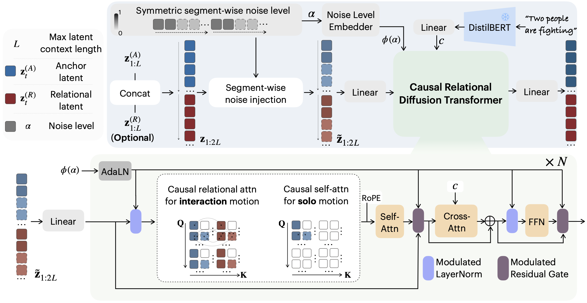

ARMS
Anchor–Relational Motion Streaming for Seamless Solo-Social Motion Transitions
ECCV 2026
Abstract
Generating temporally continuous and socially coherent human motion from text remains a fundamental challenge, particularly in realistic streams where people act alone, enter interactions, and later disengage. Most existing methods generate fixed-length motion clips under static agent configurations, which makes them brittle to solo–social transitions and unsuitable for incremental generation over long horizons. We propose ARMS, an Anchor–Relational Motion Streaming framework that unifies solo motion and human–human interaction within a single causal generative process. ARMS introduces a dynamics-asymmetric representation that decouples per-person temporal evolution from inter-person alignment via a partner-referenced relative-translation term, enabling seamless switching of social coupling without sacrificing long-horizon stability or spatial consistency between agents. On top of a causal latent space, a causal relational diffusion model progressively refines motion segment-by-segment using only past context, capturing both intra-person temporal dependencies and inter-person relations. Mode-aware relational gating activates or masks cross-agent connections, so the same model supports both solo and interactive generation. Experiments show that ARMS improves transition smoothness and social coherence compared to interaction-centric baselines, while also achieving competitive results on human–human interaction benchmarks.
Pipeline

We encode motion into causal latent streams for the Anchor and Relational agents, concatenate them, and apply symmetric segment-wise noising. A text-conditioned Causal Relational Diffusion Transformer denoises the sequence using segment-wise causal attention and mode-aware relational gating masks, enabling cross-agent visibility for interaction and masking it for solo motion.
The following videos show the raw generated results and are rendered without post-processing, such as motion smoothing or foot-skating removal.
Solo-to-Solo
- A man walks forward through the streets flippantly.
- A person raises their right hand then places it back down.
- A person walks in reverse to avoid a crack in the sidewalk.
- A person walks forward, picks up something.
- A person who is standing with feet spread apart by his sides takes sideways to his right.
- A person performs a forward cartwheel.
- A person walks diagonally.
- A person walks in a clockwise circle, with both arms at at his sides.
- A person throws item with left hand then catches something with both hands
- A person claps their hands.
- A person raises their right arm and waves the hand.
- Someone takes a step forward as if they were bumped from behind.
- A person walks up to picks something up off the floor.
- A person is walking in a counter counterclockwise circle.
- A person walks forward in a near straight line.
- A person balances on their right foot with their left leg stretched to the left.
- Someone walk up to pick something up off the floor.
- A person is walking in a counter counterclockwise circle.
- A person walks forward in a near straight line.
- A person balances on their right foot with their left leg stretched to the left.
- A person jumps in place then raises hands above head then repeats it
- A person walks in a circle to their right.
- A person raises their hand and then lowers it.
- A person raises their arm and then places it back down.
Interaction-to-Interaction
- These two face each other, and then bow with respect.
- The other person aims a couple of punches, who steps back to avoid them.
- Two people are shoving each other.
- One person is presenting products to the other person.
- One person attacks the first one by lifting their left leg and right leg alternatively.
- One lifts their right leg to strike. They pause and show mutual respect by bowing to each other.
- The other person raises both hands above their head, lifts their right leg and moves around the first person while stretching their arms upward and then outward in a counterclockwise direction.
- The first person holds an item with both hands in front of him, while the second hits it with their left knee.
- Both they grasp hands and twirl in a circle.
- Both people move forward together in unison.
- The first person swings the left hand in front of the chest, then rotates it around and drops it straight down together with the right hand that was raised at the same time. The second raises hands to the waist then pulling it downwards.
- One lifts the right leg to launch an attack, and the other person raises one leg to defend.
- These two are practicing fencing, and one person scores a hit on the other person's chest with the sword.
- Two persons are dancing with each other.
- One person advances to strike the other person.
- They stroll in the same direction by maintaining side-by-side positions.
- These two raise their right legs in preparation for an attack.
- They spin towards each other.
- One shoves both hands on the other's shoulders while the other continuously moves the arms sideways.
- One person grasps the other person's right hand with his left hand.
- These two people lower their arms, then the first person pivots, facing forward and walks away.
- Two humans are engaging in a practice session of fencing.
- Two individuals sitting on chairs.
- The first one lifts their right leg to strike the second one.
Solo-to-Interaction-to-Solo
- A person walks while leaning on a rail.
- The person is doing a light hop.
- One person prevents the other person from waving.
- These two people lower their arms, swap locations and unfold their arms.
- A person walks in a half circle towards the right
- A person does circular motion with right hand stomach height
- The person slide right his left foot.
- A person stands stills and uses his left arm as if to clean a counter.
- A person with their hand to their head look around then walks backwards
- The person bends down and picks up an object from the ground.
- The two people take a step forward with their right foot.
- The first one inspects an item held in the right hand, then the second one seizes the item and raises it above their head using the right hand. the first one continuously jumps to retrieve the item, and the second one also jumps to prevent the item being taken away.
- A person is walking forward and then swiftly turns left and starts walking sideways.
- Both feet at the same to jump to the right.
- A person walks slowly forward placing one foot in front of the other whilst raising both arms straight up and then back down.
- A person walks right diagonally, turns left walks a few steps then walks back and stands facing forward.
- A person raised the both hands and show some gestures
- A person is walking in a counterclockwise circle.
- The first person presses one of the second's hands with their left hand, then they both move apart from each other.
- The first one tilts the body to the left and brings the left arm back, then extends the left arm to the left and slides from left to right. the other person retracts the right arm, then extends the left arm to the right and slides from right to left.
- A person stumbles forward a few steps.
- A man walks forward and then backwards.
- A person walks forward slowly.
- A person puts their hands together and swings them.
- The first one was walking forward and stepped over some thing.
- The person walks forward and then waits while its arms waves.
- One person extends the left leg and launches an attack, and the other pulls back their right leg to avoid the attack.
- The two move to the right side.
- The person is walking.
- A person is jumping jacks in place.
- The man is walking fast
- A person hops on one leg to the right with their left leg trailing behind them.
- A person shuffels to the right, right foot behind left then back to center.
- Someone nervously pacing around in a circle
- One person respectfully hands over something to the other person and exits.
- The first person rotates body and lifts the right leg in a assaulting motion towards the second.
- Starting with his left foot, a person ambles forward.
- A person raises left arm to shoulder height then drops to side.
- A person is walking in a counter counterclockwise circle.
- A person is walking, then turns right.
- A person puts down a box to walk forward.
- A man walks and then starts running.
- one person holds the other's hand, leading them to move forward.
- The person lifts their right arm and points to the sky with their left hand.
- A person lowers their arms then moves them side to side and lowers them.
- A person walks casually up to a point.
- Starting from the bottom left, a person walks a lazy almost full circle.
- A person is lifting the right leg.
Comparison
Non-canonical representation [1]
Motion is generated in global coordinates, which preserves spatial coupling but restricts motion to coordinate patterns observed during training. As a result, incremental generation after prompt transitions often shows weaker text alignment.
- One person lifts the right leg to strike, and the other swiftly raises the right leg in retaliation.
- One person strikes a pose while the other person kneels to take photographs.
- One person launches a punch towards the other with the right arm, then pivots and kicks with the right leg at the other.
Canonical representation
[2, 3]
Each person is modeled in a root-centered coordinate system using velocities and local joint features, which enables smooth and stable individual motion. Interaction is introduced only through an initial relative transformation, which can lead to drifting spatial relations over long sequences.
- One person lifts the right leg to strike, and the other swiftly raises the right leg in retaliation.
- One person strikes a pose while the other person kneels to take photographs.
- One person launches a punch towards the other with the right arm, then pivots and kicks with the right leg at the other.
InterMask [4]
Interaction is generated through masked inpainting conditioned on the entire motion window. This allows coherent short sequences but requires generating the full motion at once and does not support incremental streaming generation.
- One person lifts the right leg to strike, and the other swiftly raises the right leg in retaliation.
- One person strikes a pose while the other person kneels to take photographs.
- One person launches a punch towards the other with the right arm, then pivots and kicks with the right leg at the other.
Ours
We model per-person motion in canonical coordinates while explicitly encoding per-frame relational displacement between agents. This preserves interaction geometry and enables temporally extensible streaming generation, though minor foot sliding may still occur.
- One person lifts the right leg to strike, and the other swiftly raises the right leg in retaliation.
- One person strikes a pose while the other person kneels to take photographs.
- One person launches a punch towards the other with the right arm, then pivots and kicks with the right leg at the other.
[1] Liang, H., Zhang, W., Li, W., Yu, J., Xu, L.: Intergen:Diffusion-basedmulti-human motion generation under complex interactions. International Journal of Computer Vision 132(9), 3463–3483 (2024)
[2] Shafir, Y., Tevet, G., Kapon, R., Bermano, A.H.: Human motion diffusion as a generative prior. In: The Twelfth International Conference on Learning Representations (2024)
[3] Yu, H., Zhang, J., Chen, C., Xiang, T., Fang, Y., Niebles, J.C., Adeli, E.: Socialgen: Modeling multi-human social interaction with language models. In: Thirteenth International Conference on 3D Vision (2025)
[4] Javed, M.G., Li, X., et al.: Intermask: 3d human interaction generation via collaborative masked modeling. In: The Thirteenth International Conference on Learning Representations (2025)
Limitations
Our method suffers from typical interaction generation issues such as body penetration between individuals.
- One person leans back and takes three steps back before spreading both arms to keep balance.
- One person lifts the right leg in preparation to strike, while the other readies for defense by raising the left leg.
- One person runs towards the other person and takes their hands, and then releases them forcefully.
- One person takes a step forward with the left foot. The other raises their head, takes a step forward with the left foot, followed by a small step with the right foot while swinging the arms slightly back and forth.
Our method does not explicitly condition on surrounding agents or context during solo motion generation.
- A person walks forwards and swings their arms up.
- A person walks forward and turns to their right.
- Two performers are playing rock, paper, scissors game.
- One greets the other by raising hand and share a joyful handshake.
- A person walks in a counter counterclockwise circle
- A person hops on right foot.